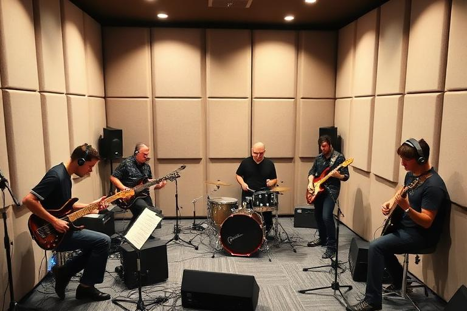
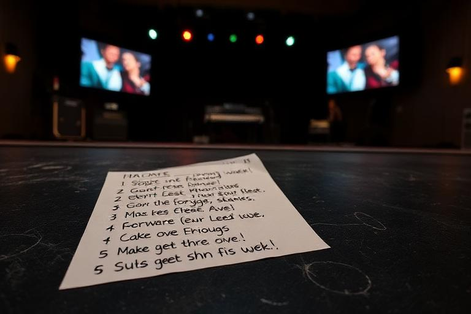
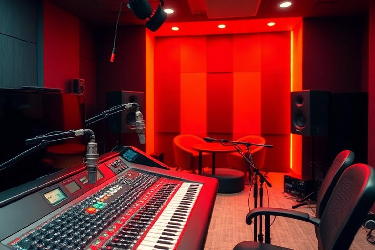
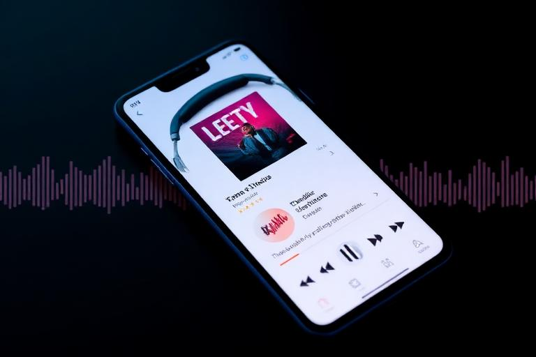
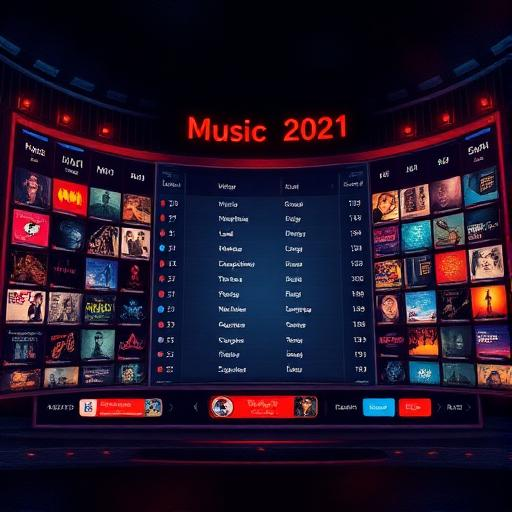

Core music loop
From Song Idea to Release
One of RockMundo’s central loops is turning an idea into music that other players can hear, perform, stream, buy and react to. The important point is that a song is not finished simply because it has been written: writing, developing, performing, recording and releasing are connected but distinct stages.
In brief
The broad flow is: create a song → develop your ability and familiarity → bring it into a repertoire → rehearse or perform it → record a version → package it into a release → choose distribution → promote it → watch how audiences and charts respond.
The music lifecycle
- Write or acquire a song. Create original material, collaborate where appropriate, or work with material you have legitimate access to.
- Develop the material. Skills, practice and repeated musical work help turn raw material into something your character or band can use confidently.
- Prepare it for a band or live context. Repertoire, familiarity, member roles and rehearsal affect how comfortably a group can perform material together.
- Record the song. Choose an appropriate studio session and make sure the people, skills and preparation needed for the recording are in place.
- Create a release. Decide how the recording fits into a single, EP or album and prepare the commercial side of the launch.
- Distribute and promote. Streaming, physical or digital formats, PR and media activity can all contribute to how widely the release travels.
- Learn from the response. Streams, sales, charts, fan growth and live reception give you signals about what is connecting.
1. Songwriting
Songwriting is where authorship and the creative identity of the music begin. A completed songwriting action does not automatically guarantee a great recording or a successful release: the rest of your career still has to carry the material.
Original songs
Useful for building a distinct catalogue, authorship history and material your band can make its own.
Collaborative songs
Collaboration can combine players and create shared creative history. Pay attention to authorship and agreed splits where the game presents them.
Genre and identity
Genre-related ability and the musical identity you develop can influence how naturally different parts of your career fit together.
Quantity vs quality
Writing constantly is not the only route. Developing a smaller catalogue that you can actually rehearse, record and promote may be more useful than accumulating unfinished plans.
2. Practice, familiarity and rehearsal
A good song on paper still needs people who can play it. Individual practice improves the performer; repertoire work and rehearsals help a band become comfortable with shared material.


3. Recording
Recording converts prepared musical material into a version that can be released. Studio choice matters, but it should be viewed as part of a chain rather than a substitute for preparation.

- Check that the song is eligible and ready to record.
- Make sure required performers can attend and are not committed elsewhere.
- Consider the skills and musical roles involved in the recording.
- Choose a studio and session that make sense for your budget and ambitions.
- Allow enough time before any planned release date.
4. Building the release
Once recordings exist, decide how to package them. A single can focus attention on one song; larger releases create a broader statement but ask more of your catalogue, budget and promotional plan.
Before launching, think about whether your release has a purpose: introducing your band, supporting upcoming gigs, building momentum, following previous success, or simply getting the first music into the world.
5. Promotion, streaming and charts
Releasing makes the music available; promotion helps people notice it. RockMundo connects releases to media, public relations, social activity, fan growth, streaming, sales and chart systems.



What broadly affects success?
Different systems use different rules, but a release campaign is generally stronger when the music, performers and surrounding career are all working in the same direction.
- The underlying quality and suitability of the song and recording.
- Relevant musical and production capability.
- Your existing fans, fame and audience reach.
- Promotion, media attention and social activity.
- Release timing and what else is happening in your career and the world.
- Live activity that gives audiences another reason to care about the music.
- Format and distribution choices where applicable.
- A degree of uncertainty and changing world conditions.